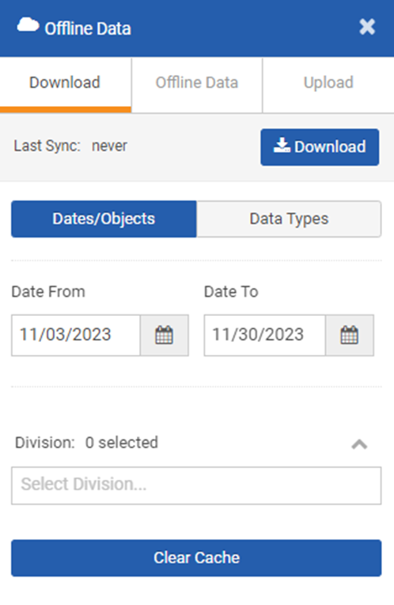
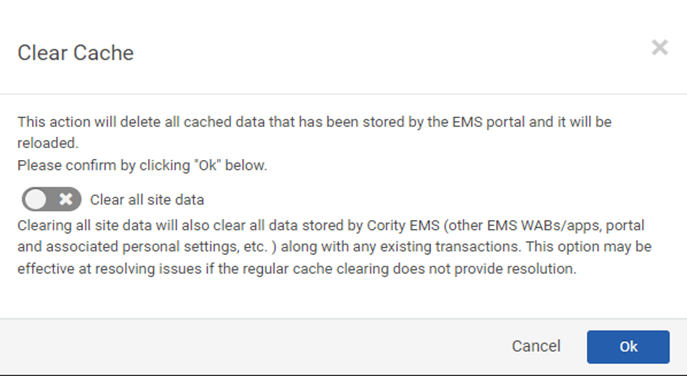

Clearing Cache is available in the Work Offline section of the Portal. The Portal cache can be cleared without losing sensitive data and pending transactions. Many systems use browser cookies to store session information. Sometimes these cookies can be corrupted resulting in data display issues. This section explains how to clear your cache and cookies in the Portal.
To Clear Cache in Portal


In your Portal browser, if you choose to clear all data from an instance you have open in one tab, that will also clear the data from any instances you have open in other tabs. The current tab will reload, but each of the other instances will have to be reloaded for them to function properly. This will not affect anything in any other browser tabs.